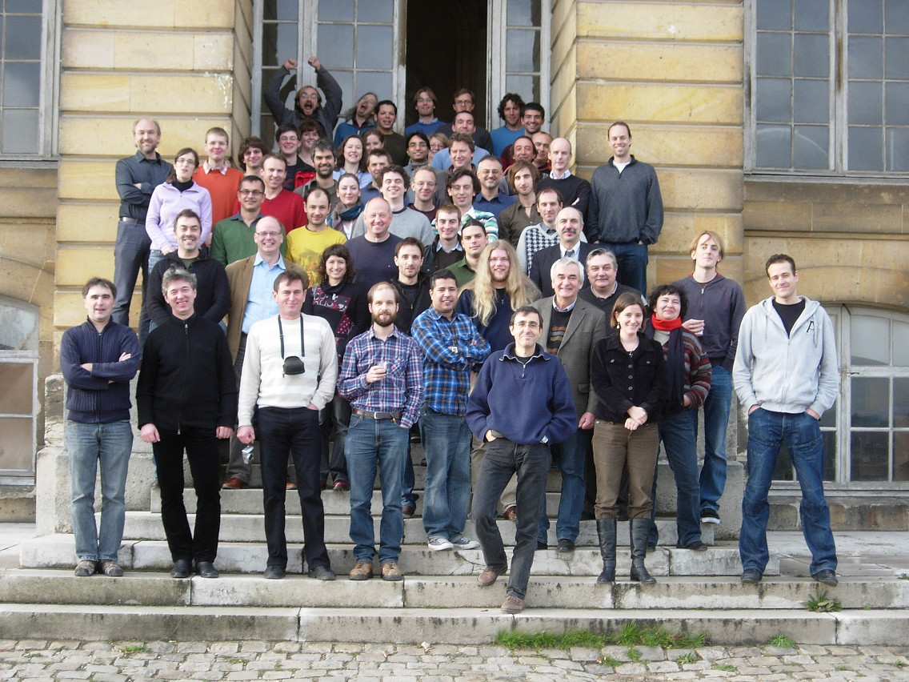

The pdf of the presentations are now linked to the schedule.

It was a pleasure to host the TKP plenary workshop in Meudon. We hope you have enjoyed it, and hope to see you back "une prochaine fois".
The LOC
We are now 5 days from the Transients Key Science Project collaboration meeting, December 14-16, Meudon. This e-mail is intended to give you the latest practical informations.
The final schedule is online (see menu on the left). We'll start at T= 11:00 am on Wednesday (welcome from 10:30), and T= 09:15 am the following 2 days.
In addition to the the 'DIRECTIONS' section below, here is a detailed access map from any of the 3 stations in Meudon (MEUDON or BELLEVUE by Montparnasse train and MEUDON-VAL-FLEURY by RER-C) to the Meudon Observatory and the CIAS, by foot (20-25 min uphill, black dotted path outside of the Observatory, red inside). At the pedestrian entrance, type the access code received by e-mail to enter, cross the corridor, take to your right and follow the road to the CIAS. There is a short cut to the left after the corridor and up through the metal stairs in the garden. In the CIAS building, under the big copper coupole, signs will indicate you the path. You will be welcomed by Nicole Letourneur and other LOC members.
For the ~15 people having requested a daily ride from a station to the Observatory, there will be 1 or 2 cars driven by Julien, Laurent, Sébastien, or me, with a big 'TKP' sign on the windshield waiting for participants at BELLEVUE and MEUDON-VAL-FLEURY stations (red « X » on the map) at about T-45 min and T-20 min. Timetables from/to the stations are here (1 to 3 Mb each !) :
We will have printouts of all 4 Timetables at the meeting.
It will help organization if people having requested a ride can send an e-mail to meetings@transientskp.org telling at which station and what time they will arrive on Wednesday.
If you have a unsolvable problem that takes you close to suicide, don't do it (you may regret it) but rather try to call a LOC member at the following numbers (taking into acount that cell phones link is not so good around the Observatory) :
We are partly subsidised by the CIAS, but as this is a rather large group, we will collect 20 Euros/person for participation to the the lunches, buffet, etc. (fixed amount whatever the duration of your stay at the meeting), plus 30 Euros/guest for the dinner of Thursday evening in Paris. Please pay in cash to Nicole upon arrival. We don't expect to deliver you a receipt except if you absolutely need it.
We look forward to welcome you in Meudon !
The LOC
Mid-december is approaching fast, so it is time to register for the Transients Key Science Project collaboration meeting, December 14-16, Meudon. Don't wait the last minute to make your hotel reservations. We did not make any arrangement, but we provide a large selection below.
You may find the meeting program as well as the list of participants in the left section. People are welcome to come and have coffee at 10:30 am before the start of the meeting at 11:00 am. The meeting is planned to end the friday at 13:30 at the latest (except if we have a large number of talks) in order to let participants leave any time from there (before or after lunch).
Please register to the workshop and send us proposals for talks by November 21, so we have time to iterate on a meeting programme. You can do so by filling the mini-form below and sending it back to meetings@transientskp.org
Most of you will of course be proposing talks of your own, but if you feel there is a topic that we should discuss even though you cannot offer to speak about it, suggest it anyway. If there is strong demand for a topic, we will try to find a speaker.
---------------- REGISTRATION / TALK PROPOSAL form ---------------
Name:
Institute:
Proposed talk title:
Proposed talk abstract (a few lines is enough!):
Any other remark (dietary requirements, etc.):
Please mail this reply to: meetings@transientskp.org
---------------------------------------------------------------------------------------
We hope to make the meeting informal, like the previous ones, and keep it cheap. We may collect some money during the meeting for lunches (at the Observatory's restaurant or as buffet at the CIAS) and a dinner, but otherwise there will be no fees.
Practical information is given below.
We hope to welcome many of you to Meudon !
The LOC
LOCATION
The meeting will be held at the Meudon Observatory (part of Paris Observatory and located 5 km south-west from Paris).
It will take place in the CIAS (Centre International d'Ateliers Scientifiques = International Center for Scientific Workshops) located in one historical building of the Meudon Observatory (Building 9 = Château / Grande coupole on this map). Lunches will be taken at the Observatory's (decent) restaurant (Building 4).
DIRECTIONS
You can access the Meudon Observatory from Paris via public transport using the following two routes. The optimal route from Paris Montparnasse station to Bellevue-Meudon is via the train MOPI. Board the train in the direction of Mantes La Jolie. These trains depart every 15 minutes and the journey takes approximately 12 minutes. The optimal route from Paris-Saint-Michel station to Meudon-val-Fleury station is via RER C. Board the train bound for Versailles Rive Gauche/Chateau de Versailles. These trains depart every 4-5 minutes and the journey takes approximately 25 minutes. A map of the RER-C route can be found here.
After leaving the train, walk up to the Observatory. It will take approximately 30 minutes at a leisurely pace to get to the CIAS where the meeting is taking place. Remember the Observatory is uphill. There will not be a coach service in operation, but LOC members will make a few round trips by car to the trains / RER stations on the mornings and evenings for those requesting a ride.
As a pedestrian, you can access the Observatory by the Place Jules Janssen entrance, the door code will be supplied by email by the LOC. If you're coming by car, use the 11, avenue Marcelin Berthelot entrance where there is a guard who will have an access list.
Once inside, there will be signs to point you to the direction of the meeting place (Building 9, Château / Grande coupole, CIAS).
Here are the links to suburbs transports website to check for lines and timetables:
Transilien: Suburb train from Paris Montparnasse - Meudon/Bellevue
RATP (Metro and RER): interactive map for trips inside Paris
Night Bus lanes: to go back late (or early :-) ) from Paris when regular train and metro services are stopped. Approx. 1 bus per hour so check the timetables!. The lane coming to Meudon Center is the N61 Direction Hotel de Ville de Vélizy. (stops in Meudon center are Eglise de Meudon, Rabelais or Stalingrad)
ACCOMMODATION
There are two main options for attendees. You can either stay close to the Meudon Observatory (1), or you can stay close to the Montparnasse Train Station in Paris (2), which allows easy train access to Meudon-Bellevue. Rates for the hotels on this list range from 60 euros to 200 euros per night (Etap < Ibis < Novotel < Mercure). A third option is to stay along the RER-C line, which includes Saint-Michel/Quartier Latin, the Champ de Mars/Eiffel Tower, etc. (see map above) with a quasi-infinite choice of hotels (see hotel booking sites).
These hotels are relatively close to the Observatory. Most are on the opposite side of the Meudon forest from the Observatory and there are few local bus services to it. Select this option if you are willing to walk, drive or take a cab from the hotels to the Observatory (> 2 km).
These hotels are far from the Observatory, but allow the use of convenient public transport to the Meudon-Bellevue train station from Montparnasse train station in Paris. The walk from the train station to the Observatory is straightforward and short (~1 km), as shown on this map:
GOING OUT
Travel guide: Parislogue
Things to do: Timeout
Concerts : Les yeux les oreilles (French) Agenda (select date and check the program)
Paris night life: here
Restaurant guide: here
The next TKP meeting will be help in the conference center of the Meudon Observatory (5 km SW of Paris) on 14-16 december 2011. Please reserve these dates on your agendas. Details will follow.